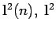
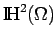

Ein vollständiger unitärer Raum heißt HILBERT-Raum.
Als normierte Räume und BANACH-Räume besitzen die HILBERT-Räume auch deren Eigenschaften. Hinzu kommen noch die eines unitären Raumes.
Unter einem Teilraum eines HILBERT-Raumes versteht man einen abgeschlossenen linearen Teilraum.
| Beispiel A | ||
|
 und L2([a,b]) mit den Skalarprodukten
|
| Beispiel B | ||
|
Der Raum  mit dem Skalarprodukt
|
| Beispiel C | ||
|
Sei
betrachtet wird. |